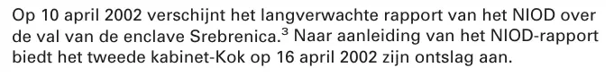

Prueba · Informe
Informe de la Comisión Parlamentaria de Investigación sobre Srebrenica, 27 de enero de 2003
El pasaje
«El 10 de abril de 2002 se publica el tan esperado informe del NIOD sobre la caída del enclave de Srebrenica. A raíz del informe del NIOD, el segundo Gobierno de Kok presenta su dimisión el 16 de abril de 2002». Página 7, el párrafo inicial del apartado 1.1.2, sobre el origen de la investigación. Traducido del neerlandés; el texto original figura a continuación.
Texto original
“Op 10 april 2002 verschijnt het langverwachte rapport van het NIOD over de val van de enclave Srebrenica. Naar aanleiding van het NIOD-rapport biedt het tweede kabinet-Kok op 16 april 2002 zijn ontslag aan.” El párrafo está impreso en tres líneas, que aquí se han unido. Justo después de la primera frase figura una llamada de nota que remite al informe del NIOD; esa llamada se ha omitido en la cita.

Por qué importa este documento
Aquí la propia comisión parlamentaria de investigación describe el peso político que tuvo Srebrenica. Seis días después de la publicación del tan esperado informe del NIOD (Instituto de Estudios sobre la Guerra, el Holocausto y el Genocidio), el segundo Gobierno de Kok en pleno presentó su dimisión. La Cámara de Representantes (Tweede Kamer) abrió a continuación esta investigación para llegar a una valoración política definitiva sobre la actuación del Gobierno, de la propia Cámara y de los responsables de la Administración y de las Fuerzas Armadas. Los rollos de película forman parte de ese mismo expediente.
Procedencia
- Documento
- Informe final de una investigación parlamentaria, título oficial Enquête Srebrenica; Rapport (investigación parlamentaria Srebrenica; informe), 463 páginas
- Remitente
- Comisión Parlamentaria de Investigación sobre Srebrenica, constituida el 5 de junio de 2002; presidente A.D. Bakker (D66), vicepresidenta B.M. de Vries (VVD), miembros A.G. Koenders (PvdA), J.C. Huizinga-Heringa (ChristenUnie), A. Mosterd (CDA), F. Vergeer-Mudde (SP) y H.R.R. Wijnschenk (LPF), sustituido el 10 de septiembre de 2002 por E.J. Groenink (LPF), que dejó la comisión a petición propia a partir del 17 de octubre de 2002
- Destinatario
- Cámara de Representantes de los Estados Generales, La Haya
- Editorial
- Cámara de Representantes de los Estados Generales, La Haya, 2003; consultado en zoek.officielebekendmakingen.nl
- Fecha
- Publicado el 27 de enero de 2003; la comisión llevó a cabo su investigación de junio de 2002 a enero de 2003
- Asunto
- La actuación de la Cámara, del Gobierno y de los responsables de la Administración y de las Fuerzas Armadas antes, durante y después de los acontecimientos de Srebrenica; el pasaje citado aquí procede del apartado 1.1.2, sobre el origen de la investigación
- Referencias
- Documento parlamentario 28 506, n.º 3, año parlamentario 2002–2003, apartado 1.1.2, página 7 (página 3 del PDF); el encabezado del volumen impreso dice 28 506, n.os 2 y 3
- Idioma
- Neerlandés
- Copia archivada
- Wayback Machine, 20 de septiembre de 2025
Citado en: el ensayo «La prohibición cayó, el libro quedó en pie» en el capítulo (4) «Un encubrimiento de dimensión internacional».
Ficha de prueba: https://
Documento: https://
Copia archivada: https://
Consultado el 27 de noviembre de 2026.

Esta página es una ficha de prueba del libro El general del encubrimiento de Edwin Giltay y del sitio web que lo acompaña.